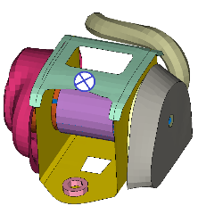
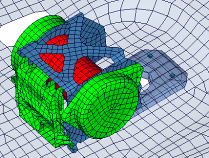
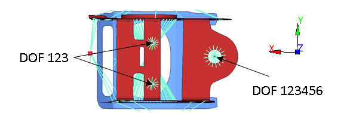
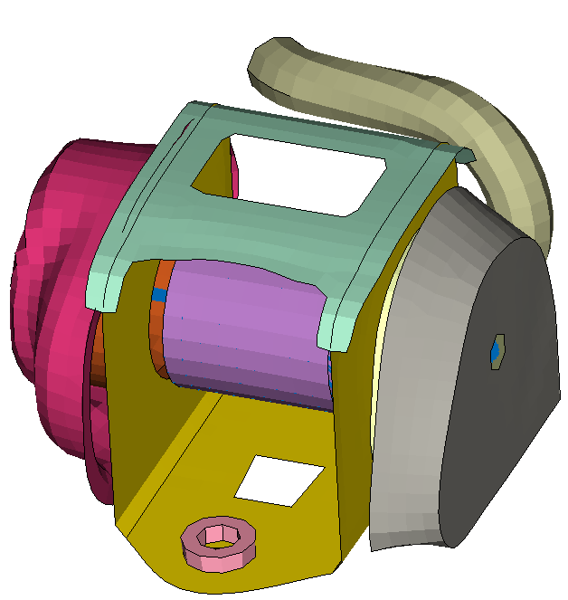
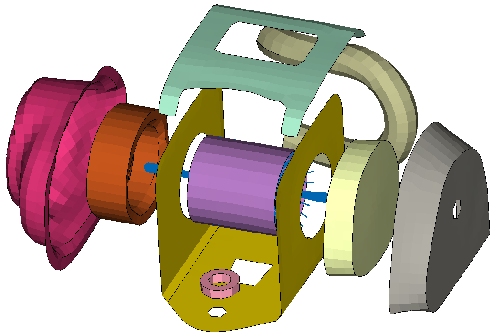
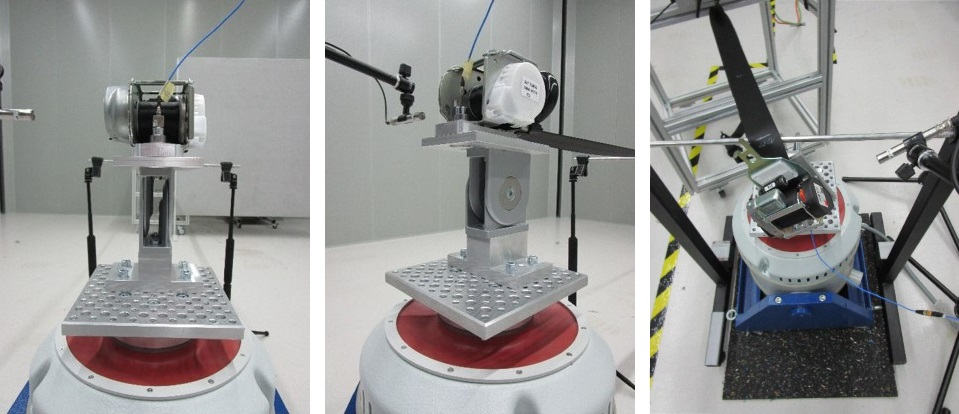
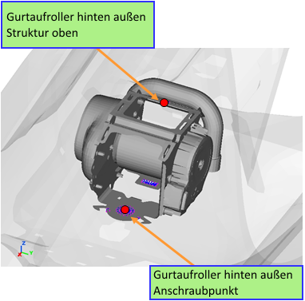
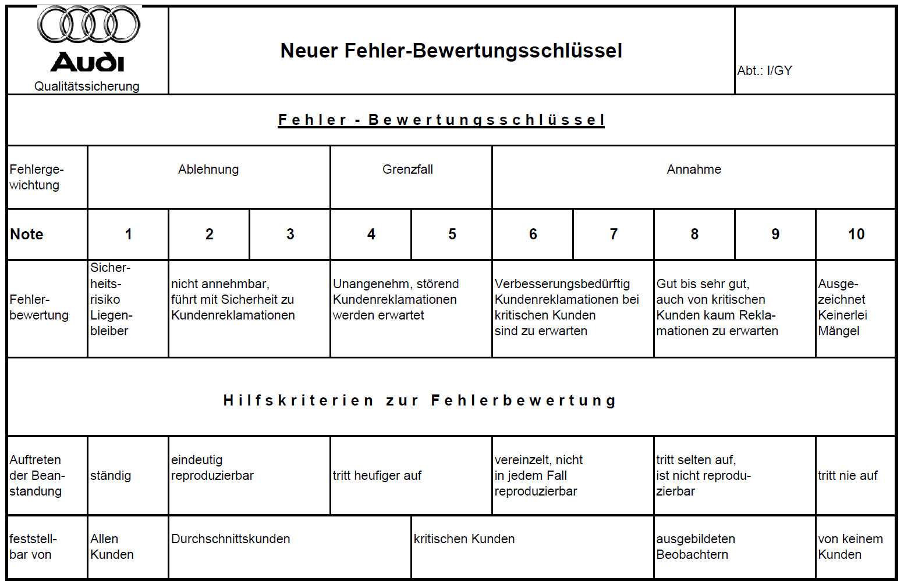

Konzern-Modullastenheft NVH Sicherheitsgurte
| V26_BT-LAH Final_Basismodul-TE-V26_Nov[redacted-ext](V5).docx |
| Verteiler |
| [redacted] |
| [redacted][redacted-name] |
| [redacted-co]EKSR/3, [redacted-name] |
| [redacted] |
| Bentley EKS/S4, [redacted-person] |
| Seat [redacted-person], Luzón Javier |
| Skoda EKS/3, [redacted-person] |
| [redacted-co]Nutzfahrzeuge NE-KC, [redacted-person] |
[I: BT-LAH[redacted-ext]]
Abstimmung
[I: BT-LAH-941]
Änderungsdokumentation
Inhaltsverzeichnis
2.1 [redacted-person]-Detailmodell 5
3 [redacted-person] und Geräuschmessung 7
3.2 Validierung des Retraktors 7
4.1 Retraktor-Geräuschverhalten aus den Shaker-Versuchen 10
4.4 Lastfälle und Anforderungen 12
5 [redacted-person] und Simulationen 14
7 [redacted-person] für Versuch und Simulation 16
7.3 Zuschlagen von Türen bzw. Heckklappe 17
8 Dokumentation und Datenaustausch 17
8.4 Dokumentation zum Projektabschluss 19
Das vorliegende Lastenheft beschreibt Anforderungen an Bauteile bzw. Komponenten und Simulationsmodelle im [redacted-person]. Es beschreibt Leistungen, Anforderungen, Prüf- und Erprobungsbedingungen, die das zu entwickelnde Produkt und der Auftragnehmer erfüllen müssen.
[redacted-person] stellt die Grundlage des zu erbringenden Leistungsumfanges des Auftragnehmers dar.
[redacted-person] ist zu befolgen.
[A: BT-LAH-5]
Das vorliegende Lastenheft und die Norm [redacted-co]99000 inkl.
Teil 1 bis Teil 4 sind zusammen Grundlage des zu erbringenden
Leistungsumfanges des Auftragnehmers.
[A: BT-LAH-6]
Dieses LAH beschreibt Leistungen, Anforderungen, Prüf- und Erprobungsbedingungen, die das zu entwickelnde Produkt und der Auftragnehmer erfüllen müssen.
[redacted-person] des Konzernmodullastenhefts LAH.DUM.857.D und LAH.DUM.857.T sind zu beachten.
Durch die [redacted-person] sind betriebskritische oder akustisch ungünstige Eigenschwingungsformen der Retraktoren und Karosserie-Anbindungsstellen zu ermitteln. [redacted-person] Response ist charakterisiert über eine Anregung von 1N in alle Raumrichtungen. [redacted-person] werden an der Oberseite des Retraktorgehäuses möglichst weit vom Anschraubpunkt entfernt eingeleitet.

Abbildung 2. Einleitung- und auswertepunkt FRF (Anregung von 1N in XYZ)
[redacted-person] ist ideal steif angebunden. [redacted-person] ist für ein Frequenzband von 10 bis 200 Hz durchzuführen.
Bei FRF-Analyse in einem [redacted-person] Modell (Karosserie), sind sowohl Strukturpunkt als auch Anschraubpunkt auszuwerten. Und FRF Kurven in einem Plot darzustellen.
Durch gezielte Änderungen der Systemeigenschaften, beispielsweise der Werkstoffdämpfung am trimmed body model oder zusätzliche Aussteifungssmaßnahmen, sind die Eigenschwingungen dahingehend zu verändern, dass kritische Frequenzbereiche vermieden bzw. mit deutlich reduzierter Amplitude durchfahren werden.
[redacted-person] Response des Retraktors ist durch den Lieferanten zu ermitteln. [redacted-person] im [redacted-person] Model erfolgt durch den Auftraggeber.
Für NVH-Untersuchungen (Schwingungen) in der ZSB-Karosserie sind vereinfachte Retraktor-Detailmodelle für jedes angebotene Retraktormodell zur Verfügung zu stellen. [redacted-person] muss das validierte Modell zur Angebotsfreigabe vorliegen.


Abbildung 2.1 Beispiele für ein vereinfachtes Retraktor-Detailmodel
[redacted-person] sind wie folgt aufzubauen:
Format: NASTRAN (Modelle müssen NASTRAN-lauffähig sein.)
Element-Kanten-Länge ab 3 mm
die Bauteil-Steifigkeiten und Massenverteilungen stimmen mit den realen Teilen überein.
der Massenvergleich (reales Bauteil zum Simulationsmodell) ist zu dokumentieren.
[redacted-person] der Drehachse sowie die Masseverteilung des Gurtbandes sind detailgetreu abzubilden.
Restgurtwickellänge 1800mm (wie unbesetzter Sitzplatz).
Im Falle von Dimpeln sind die translatorischen Freiheitsgrade (DOF: 123) an der Dimpelauflagefläche zu sperren.
Die steifigkeitsrelevanten Komponenten im Gurtretraktor sollen möglichst modelliert und nicht nur als Ersatzmasse abgebildet sein. Dazu zählen:
Retraktor-Rahmen
Halteplatte (Oben)
System- und Sensorkappen
Gurtaufroller und Aufrollerscheiben
Lagerung der Welle zum Gehäuse
Rohr
[redacted-person] (anhand von [redacted-person] abzubilden)


Abbildung 2.2 Detailierungsgrad eines vereinfachten Retraktor-Detailmodel
Ein entsprechender Detaillierungsgrad würde weitere zusätzliche Analysen zu FRF ermöglichen, wie
Betriebsschwingformanalyse
Auswertung der Strain-Energie in der Struktur
Sensitivitäts- und Optimierungsanalyse
[redacted-person] ist gemäß Kapitel 3 [redacted-person] und Geräuschmessung zu validieren.
Es ist ein Shaker zu verwenden, welcher Anregungen in vertikaler und lateraler Richtung (y- und z-Richtung) ermöglicht. Dessen erste Eigenfrequenz darf nicht im Bereich des Anregespektrums liegen.
[redacted-person] ist mit starren Retraktor-Ersatzmassen und Retraktor-Halter zu validieren. Es ist die leichteste und schwerste Retraktormasse zu testen. [redacted-person]-Ersatzmassen sind gemäß Fahrzeug-Einbaulage an den Halter zu schrauben. In weiteren Versuchen bleibt der Retraktorhalter immer an der gleichen Stelle fixiert.
[redacted-person] ist in einem [redacted-person] zu betreiben oder entsprechend zu kapseln um eine Störung der Messung zu vermeiden.
Es sind mindestens zwei 3-achsiale Beschleunigungsaufnehmer zu fixieren:
auf der Retraktorbefestigungsschraube am Halter.
direkt auf der Shaker-Platte.
Es sind die in Abschnitt 7 beschriebenen Anregungssignale zu verwenden.
[redacted-person] ist gemäß Abschnitt 5.2 zu erreichen. [redacted-person] sind ebenfalls durch Ersatzmassen zu approximieren.
Der verwendete Shaker-Aufbau muss folgende Rahmenbedingungen erfüllen:
RMS-Wert der spektralen Leistungsdichte (RMS) der y- und z-Beschleunigung darf maximal 5% vom Sollwert abweichen (Auswertebereich 15 bis 100 Hz, Abtastrate 1kHz); Außer einem [redacted-person] 4. Ordnung mit Eckfrequenz 500 Hz ist kein weiterer Filter zu verwenden. PSD-Randparameter: Hanning-Fenster mit 4096 Samples; Abtastrate 1kHz; 90% Überlappung; Amplitudenskalierung RMS.
[redacted-person] der Beschleunigung in Querrichtung um maximal 10% des RMS-Wertes der spektralen Leistungsdichte in y- bzw. z-Richtung ist nicht zulässig. [redacted-person] der Z-Richtung ist gegenüber dem resultierenden Vektor in der XY-Ebene zu bestimmen. Gleichfalls ist die Abweichung der y-Anregung gegenüber des resultierenden Vektors in der xz-Ebene zu ermitteln..
[redacted-person] hat im Leerlauf, ohne Retraktor, mit eingeschaltetem Gurtbandantrieb eine Lautheit < 1 Sone aufzuweisen.
[redacted-person] (Gurtaufroller und Aufbau) liegt auf der Z-Achse des Shakers.
Ein möglichst starrer Halter ist zu verwenden, der keine signifikanten Eigenschwingungen unterhalb der doppelten Anregefrequenz aufweist
[redacted-person] sollen zur Validierung oder Geräuschquellenuntersuchung des Retraktors in Absprache mit dem Konzern durchgeführt werden.
[redacted-person] der ersten Biege und Torsionsmode des Retraktors aus Simulation und Versuch durch eine y- oder z-Anregung ist vor der ersten Integration in ein Fahrzeug zu validieren und dokumentieren. Hierzu ist eine Shakermessung des Retraktors in Fahrzeug-Einbaulage an einem starren Halter (Abbildung 3.1) durchzuführen. Es empfiehlt sich, einen Halter zu verwenden dessen erste Eigenfrequenz mindestens das Doppelte der maximalen Anregefrequenz beträgt. [redacted-person] ist mit folgenden Spezifikationen durchzuführen:
Messung ohne Dimpel ([redacted-person]), Auflagefläche des Retraktors entspricht einer Kreisfläche mit Radius 22,5 ± 0,5 mm um den Anschraubpunkt; gemäß TL82500
Messung auf einem starren Halter in Analogie zur Befestigung im Fahrzeug (Dreipunktauflage mit Dimpel für [redacted-person])
Alternativ ist nach Rücksprache mit den beteiligten Fachabteilungen folgende Messung möglich:
Messung „flach“: horizontal vollflächig aufliegender Retraktor mit Vorspannung (z.[redacted-person]). Es ist ein Kugelsensor für die horizontale Lage zu verwenden.
Messung auf einem starren Halter in Analogie zur Befestigung im Fahrzeug (Dreipunktauflage mit Dimpel für alle Fahrzeugposition)
Restgurtwickellänge 1800mm: wie unbesetzter Sitzplatz
Um die Geräuschquelle eindeutig zu identifizieren sind nach Abstimmung mit der [redacted-person] mit festgesetzten Retraktorteilen (z.[redacted-person]) durchzuführen.
Durchführung nach TL82500 oder als Alternative nach neuer Spezifikation, siehe Abschnitt 7.1. Lastfälle, nach Rücksprache mit der Fachabteilung
Ausgehend von einer Restwickellänge von 1800mm ± 5mm wird der Gurt während der Messdauer von 60 s ± 1s mit konstanter Geschwindigkeit um die Länge eingefahren, die einer einfachen Umdrehung des Gurtwickels entspricht. Alternativ kann die lauteste Wellenposition abgeprüft werden.
[redacted-person] und Randbedingungen müssen im Nachweis dokumentiert sein.
Abweichungen zur TL82500 z.[redacted-person]. der Versuchsrandbedingungen sind mit der Fachabteilung abzustimmen.
Aus jeweils 5 gemessenen Exemplaren eines Retraktortyps ist der Mittelwert zu bilden.
Es sind vier 3-achsiale Beschleunigungsaufnehmer nach TL 82500 zu fixieren.
auf der Retraktorbefestigungs-Schraube am Halter (Position identisch zu Abschnitt 3.1).
auf der Shaker-Platte (siehe Abschnitt 3.1).
zwei auf dem Retraktor-Gehäuse, davon einer möglichst weit von der Schraubenposition entfernt, der Zweite auf der Sensorseite an der Sensorposition.
Das vereinfachte Retraktor-Detailmodell ist auf die FFT der Beschleunigungssensoren am Retraktorgehäuse zu validieren.
Zusätzlich zu den Beschleunigungen des Retraktors ist der Schalldruck zu messen und zu dokumentieren.
Dazu ist ein Messmikrofon in 100mm ±5mm Abstand zu verwenden. [redacted-person] des Mikrofons ist auf die Sensorseite zu richten, die Mikrofonachse hat der Wickelachse des Retraktors zu entsprechen. Aus dem Schalldruck sind die Lautheit [Sone] und der bewertete Schalldruckpegel [dB(A)] sowie der Pegel über Zeit zu ermitteln.
Es gilt die Anforderung gemäß Projektlastenheft des jeweiligen Fahrzeuges.
[redacted-person] der Lautheit ist mit folgenden Parametern durchzuführen:
[redacted-person] 4. Ordnung mit Grenzfrequenz fc=500Hz (IIR-Filter).
Lautheit über Zeit nach Filtermethode ISO 532-1; Freifeld;
Butterworth 6. Ordnung;
Abtastrate 20480Hz; Zeitmittelung = 2ms.
(Bei höheren Abtastraten ist ein Tiefpassfilter 4. Ordnung mit
Grenzfrequenz fc = 12kHz zu verwenden)
Einzahlenwerte werden über arithmetischen Mittelwert der Lautheitskurve gebildet.

Abbildung 3.1 Beispiel für Shaker-Aufhängung des Retraktors in einem Semifreifeldraum.
[redacted-person] ist gemäß Abschnitt 5 [redacted-person] und Simulationen zu erreichen.
[redacted-person] der Mikrofonmessung ist außerdem über Zeit zu bestimmen. Dazu sind folgende Parameter zu verwenden (Konform ISO 532-1 und DIN 45631/A1):
Anwenden eines Hochpassfilters 4. Ordnung mit der Eckfrequenz 1500Hz
Anwenden eines Tiefpassfilters 2. Ordnung, Eckfrequenz 6000 Hz
Pegel über [redacted-person] der gefilterten Daten, A-Bewertet, Blockgröße 50ms
FFT über [redacted-person].
1/48 [redacted-person]
A Bewertet
Überlappung 50%
Hanning-Fenster
Mit den vereinfachten Detailmodellen sind die Anbindungssteile/ Halter des Retraktors an die Karosserie auszulegen bzw. zu optimieren (z.[redacted-person] bei RGS-Modellen mit zwei Anschraubpunkten). D. [redacted-person] für den Halter wie auch das Blechgehäuse des Retraktors sind gewichtsoptimale Verbesserungsvorschläge erarbeiten. Dazu sind konstante Anregungen nach Abschnitt 1 einzuleiten.
[redacted-person] der karosserieseitigen Anbindungsstelle erfolgt durch die [redacted]Hierzu wird ein von Randbedingungen der Einbauposition abhängiges, standardisiertes Retraktormodell (Einheitsretraktor) genutzt, dass das den jeweils schwersten in Frage kommenden Retraktortyp abdeckt.
[redacted-person] des Retraktors samt Halter zu den karosserieseitigen Anschraubstellen ist nach den Anforderungen des Lastenhefts LAH.DUM.857.D zu gestalten. Es sind vergleichende Simulationen an einem starren Halter durchzuführen. Toleranzen der Anbindungsstellen zwischen Retraktor und Karosserieblech sind die Dimpelauslegung zu beachten.
Es sind Akustik-Simulationen gemäß diesem Kapitel durchzuführen. Zur B-Freigabe muss das korrekte akustische Verhalten der im Konzern angebotenen Retraktoren durch eine Akustik-Simulation nachgewiesen werden. Ziel ist es, durch beispielhafte Simulation mindestens zweier Retraktoren die Prozesssicherheit zu verbessern. Bei akustischen Auffälligkeiten sind diese durch Akustiksimulationen nach Rücksprache mit der Fachabteilung zu untersuchen. [redacted-person] ist eine Simulation in Fahrzeuggeometie mit fahrzeugspezifischen Anregungen zur Identifizierung potentieller Geräuschquellen.
Aus den ermittelten FFTs und Schalldruck-Messungen, gemäß Kapitel 3 [redacted-person] und Geräuschmessung, sind konstruktive Rückschlüsse zur Reduzierung der Retraktor-Geräuschabstrahlung und die dafür notwendige Anbindung an die Karosserie zu ermitteln. Dazu ist auch die Lautheit [Sone] und der bewertete Schalldruckpegel [dB(A)] über die Frequenz darzustellen. Zusätzlich sind Lautheit und Pegel über Zeit darzustellen.
[redacted-person] ist analog zu der der NVH-Retraktormodelle (Abschnitt 2.1) aufzubauen. Zusätzlich sind folgende Punkte zu berücksichtigen:
[redacted-person] mit darauf aufgewickeltem Gurtband (äußere Lage) und deren Anbindung an das Gehäuse sind detailgetreu darzustellen; das Verhalten der Lagerung der Welle zum Gehäuse muss mit den realen Bauteilen übereinstimmen. [redacted-person] der Drehachse sowie die Masseverteilung des Gurtbandes sind detailgetreu abzubilden.
[redacted-person] der Sperrklinken-Position ist zu berücksichtigen.
[redacted-person] des Retraktors ist mit Hilfe einer Mehrkörpersimulation nachzubilden.
[redacted-person] wird empfohlen:
Berechnung der Kontakt- und Lagerkräfte zwischen den Bauteilen des Systems im Zeitbereich mittels einer Mehrkörpersimulation (MKS) für vorgegebene Anregung (Anregungsrichtung und Beschleunigungssignale sind im Lastenheft definiert) unter Berücksichtigung der Flexibilität von Sensorgehäuse, Sensorhebel, ggf. Gurtstrafferrahmen und Systemkappen. Die flexiblen Strukturen werden in ein MKS-Simulationsmodell über ihre Craig-Bampton-Modal-Basis integriert. [redacted-person] der gespeicherten Zeitsignale muss mindestens 10 kHz betragen.
Ermittlung der gemittelten komplexen Spektren von den berechneten Zeitreihen der Kontakt- und Lagerkräfte im Frequenzbereich bis 5 kHz als Anregung für anschließende Akustiksimulation im Frequenzbereich. Folgende FFT Parameter sind zu verwenden: Blockgröße 2048, Überlappung 50%, [redacted-person].
Berechnung der freien Strukturmoden des Gurt-Retraktors (Zusammenbau) im Frequenzbereich bis 5,5 kHz für die anschließende Akustiksimulation.
Berechnung des gemittelten Schalldruckspektrums am Messmikrofon (Lage des Mikrofon siehe Abschnitt 3.2.1) infolge der Schallabstrahlung vom Gurt-Retraktor im Frequenzbereich bis 5 kHz. [redacted-person] sind die im Punkt 2 ermittelten, zeitabhängigen, komplexen Kraftspektren zu verwenden. In den Simulationen sollen die im Punkt 3 ermittelten Strukturmoden genutzt werden. Für die Berechnung der Schallabstrahlung sind vorzugsweise die [redacted-person] (ATF) zu verwenden, die unabhängig von der Anregung nur einmal für eine Gurtstraffergeometrie im Frequenzbereich bis 5 kHz und Frequenzauflösung von 10 Hz zu ermitteln sind. Dabei ist die Oberflächenimpedanz des aufgewickelten Gurtes zu berücksichtigen. Über die ATF ist die Schallabstrahlung für einzelne Zeitsegmente zu berechnen. Diese sind zu einer kontinuierlichen Zeitreihe zu verknüpfen, aus der die Lautheit zu bestimmen ist.
Treten in der Konstruktion des Gurt-Retraktors großvolumige (eine Dimension größer oder gleich 30 mm) Hohlräume zwischen den einzelnen elastischen Bauteilen des Gurtstraffers auf, so ist zusätzlich zur Schallabstrahlung auch der Schalldurchgang durch diese Bauteile zu berechnen. In diesem Fall wird der Schalldurchgangsanteil des Schalldrucks aus einer gekoppelten vibroakustischen Simulation unter Berücksichtigung der im Punkt 3 ermittelten und auf das Akustiknetz projizierten Strukturmoden berechnet. Die beiden Anteile des komplexen Schalldruckspektrums (für Schallabstrahlung und Schalldurchgang)werden anschließend zu einem Gesamtspektrum zusammengefasst. Bei den Simulationen der Schallabstrahlung und des Schalldurchgangs sind vorzugsweise die im Experiment ermittelten Werte der Modaldämpfung der Strukturmoden zu verwenden. Als eine erste Näherung ist die Modaldämpfung im gesamten Frequenzbereich als 3% anzunehmen.
[redacted-person] ist mit den in Kapitel 7 [redacted-person] für Versuch und Simulation geforderten Anregungsprofilen der jeweiligen Lastfälle im Aufbau „Retraktor auf starrer Befestigung (ohne Fahrzeugumgebung) durchzuführen. [redacted-person] sind konstruktive Änderungen am Retraktor vorzunehmen und das Erfüllen der Anforderungen nachzuweisen. [redacted-person] des Retraktormodells nach konstruktiven Änderungen ist vorzunehmen.
[redacted-person] und Grenzwerte sind dem Lastenheft LAH.DUM.857.D zu entnehmen.
Es gilt für alle Lastfälle:
Anregungsstelle: Anschraubpunkt und [redacted-person] Mitte (siehe Abbildung 4.1)
Simulationsaufbau: Retraktor an starrem Halter.
Auswerteposition: Sensorseitig auf der Wellenachse 10cm vom Retraktorgehäuse entfernt.
Aus den simulierten Schalldrücken ist die Lautheit [Sone] und der bewertete Schalldruckpegel dB(A) zu ermitteln.
[redacted-person] der Simulation sind analog zu denen aus den realen Versuchen, siehe Abschnitt 2 und 5.

Abbildung 4.1: [redacted-person] und Struktur oben Mitte am [redacted-person] 6.
[redacted-person] ist mit Hilfe von CORA darzustellen. CORA (CORelation and Analysis) ist eine von der PDB (Partnership for [redacted-person] and Biomechanics) initiierte Software zur objektiven Bewertung von Kurvenverläufen. [redacted-person] steht kostenfrei vom OEM inklusive zu verwendender Konfigurationsdatei, Handbuch und Beispielen zur Verfügung. Zu vergleichen sind die in den Versuchen gemessenen und in dem validierten Simulationsmodell berechneten Signale für Beschleunigung und Schalldruckpegel. Die zu vergleichenden Signale müssen identisch gefiltert sein.
Zur einheitlichen und objektiven Bewertung darf die vom OEM vorgegebene Konfigurationsdatei nicht verändert werden. Die bestimmten Vergleichsgrößen sind der Dokumentation der Akustiksimulationen beizufügen.
Ziel ist, eine möglichst gute Korrelation zwischen Simulation und Versuch zu erzielen. [redacted-person] dienen die in Tabelle 5.1: Bewertungskriterien CORA dargestellten Korrelationsgrößen.
[redacted-person] ist gemäß Tabelle 5.1 für sich alleine zu bewerten:
|
|
|
|
|---|---|---|---|
|
|
|
|
|
|
|
|
Tabelle 5.1: Bewertungskriterien CORA
Liegen mehrere Versuche einer Versuchs-Konfiguration vor, so müssen die Simulationskurven, neben der geforderten Validierungsgüte nach CORA, auch innerhalb der Versuchskurven liegen. Dies gilt auch für die Lautheit [Sone] und den bewerteten Schalldruckpegel [dB(A)].
Das relevante Auswerteintervall ist für alle Signale eines Lastfalls gleich und wird von CORA automatisch anhand des Beschleunigungssignals des Versuchs ermittelt.
[redacted-person] der Retraktoren im Fahrzeug erfolgt auf den Schlecht-Wege-Strecken auf dem Prüfgelände in Neustadt unter Beteiligung des Knister-Knaster-Teams. [redacted-person] und Freigabe der Retraktoren erfolgt im Rahmen einer Testfahrt im VFF-Fahrzeugstand. [redacted-person] während der Fahrt oder bei zu erwartenden Geräuschauffälligkeiten (z.[redacted-person] von Simulationen oder konstruktionsbedingte Sonderfälle) können durch die Fachabteilung weitere Geräuschfahrten angeordnet werden.
[redacted-person] werden von der Fachabteilung geplant und durchgeführt. [redacted-person] des Zulieferers ist möglich aber nicht zwingend erforderlich.
Bei den ausgewählten Fahrzeugen werden solche bevorzugt die den Anforderungen der Serie gerecht werden (z.[redacted-person] der Auflagefläche). [redacted-person] werden grundsätzlich ohne geräuschreduzierende Maßnahmen (Heckrauschpaket, Hutablage, Verkleidungsteile) durchgeführt um mögliche Störeinflüsse dieser Teile zu vermeiden. [redacted-person] wird bei der Bewertung berücksichtigt.
[redacted-person] der Retraktoren findet vorzugsweise auf der LZS 5 ([redacted-person] / Kopfsteinpflaster) bei einer Geschwindigkeit von 50 km/h statt um die Vergleichbarkeit zu gewährleisten. Ist der Retraktor beim Hand-Klopf-Test auffällig, ist die Auffälligkeit durch hinzuziehen weiterer Streckenabschnitte nach zu reproduzieren.
[redacted-person] der Retraktoren wird subjektiv durch das Knister-[redacted-person] und die Fachabteilung durchgeführt. [redacted-person] wird anhand eines festen Bewertungsschlüssels durchgeführt (siehe Abbildung 6.1 : [redacted-person]-Knaster-Team.)
Zusätzlich werden die Bewegungen des Retraktors und des Fahrzeuges sowie der Geräuschpegel im Fahrzeug aufgenommen und mit Simulationsergebnissen und Shaker-Versuchsergebnissen abgeglichen.
[redacted-person]-Versuche zum Akustik- und Schwingverhalten sind vor der ersten Geräuschfahrt durchzuführen und zu dokumentieren.
Die in der Geräuschfahrt zu testenden Retraktoren sind bis spätestens einer Woche vor Fahrtbeginn der Fachabteilung in der gewünschten Konfiguration zur Verfügung zu stellen. Hierbei sind mindestens zwei Retraktoren je Teilenummer für einen potentiellen Cross-Check während der Geräuschfahrt zur Verfügung zu stellen, die nach dem Testing an den Zulieferer zurückgegeben und bei Bedarf als Vergleichsmuster aufbewahrt werden.
Bei vorangegangener Sonemessung mit einem Wert >8 Sone sind zudem Toleranzgrenzmuster zur Verfügung zu stellen, die einen geräuschtechnischen Worst-Case darstellen. Diese werden bei Bedarf separat in der Geräuschfahrt im Fahrzeug getestet.

Abbildung 6.1 : [redacted-person]-Knaster-Team.
Anregungsprofile:
Anregung in y- und z-Richtung gemäß TL82500 Anregungsprofile: Anregung in y- und z-Richtung
Rauschen 40 bis 100Hz
[redacted-person] der Anregungsamplitude über 4 Minuten, Messung der N10 Lautheit in [sone]
[redacted-person]: Startwert $2\frac{m}{s^{2}}$, Endwert $10\frac{m}{s^{2}}$
Bildung des gleitenden Mittelwerts mit 15 s Mittelungsfenster
Darstellung: Lautheit über Amplitude in y- und z-Richtung
Anregungsprofile:
Strecke 4: Rasensteine, USW, Bremswellen, Asphaltbeton, TE (entspricht [redacted-person] 1 + 2)
Strecke 5: [redacted-person] (entspricht Kopfsteinpflaster)
Strecke 8: Weinzierl
Anregungsprofile:
Tür- und Heckklappenanregungsprofil: Zuschlaggeschwindigkeit 1.1m/s und 1.4m/s
Bewertung des Geräuschverhaltens nach impulsartiger Anregung erfolgt subjektiv über Fachpersonal des „Knister-Knaster“-Teams
Ggf. ist eine Abstimmung mit der Fachabteilung [redacted-id] zu führen
Anregungsprofile:
breitbandige Anregung von 30 – 150 Hz für Subwoofer auf Hutablage.
Eine entsprechende Test-CD kann über die Fachabteilung bei [redacted-id] angefragt werden.
Die gesamte Dokumentation ist vom Auftragnehmer in deutscher Sprache zu erstellen.
Die technischen Unterlagen sind entsprechend nach OEM-Vorgaben auszuhändigen.
Alle die im Lastenheft NVH Sicherheitsgurte geforderten Versuche (Messkurven, Filme, Auswertungen, Ergebnisse, Präsentationen, Versuchsteile) und Simulationen (Modelle mit Versuchsumgebung wie z. [redacted-person], Hutablage, Berechnungen, Auswertungen, Präsentationen, Includes, Lastfallparameterdateien, Ergebnisse) sind an den OEM zu übergeben.
Die zugrundeliegenden Validierungsdaten sind zusammen mit dem validierten Gesamt-Modell zu übergeben.
[redacted-person] sind vom Zulieferer in die OEM-Datenbank ([redacted-co] KVS; [redacted-co]: LoCo, CAE-Bench2 [Simulationen], Visverdi bzw. Falcon [Versuch]) zu importieren.
[redacted-person] (Simulationsmodelle, Versuchsdaten und sonstiges) unterliegen der Geheimhaltungsverpflichtung für vertrauliche Unterlagen gemäß den Entwicklungsvereinbarungen und stehen dem VW-Konzern innerhalb ihrer Prozessabläufe uneingeschränkt zur Verfügung.
Wird eine Weitergabe der Modelle bzw. Teilmodelle an Dritte notwendig (z.[redacted-person] geplante COP-Einsätze in anderen Fahrzeugmodellen), so wird der OEM den Partner über die geplante Weitergabe informieren und weiterleiten. [redacted-person] erlischt 36 Monate nach Projektende.
[redacted-person] gilt nicht bei einer Weitergabe der Modelle an Engineeringpartner, welche diese Daten ausschließlich in [redacted-person] für den OEM verwenden. In diesem Fall ist eine Weitergabe ohne Auflagen erlaubt.
[redacted-person] sind nach Aufforderung vor Ort beim OEM bzw. dem Generalentwickler GE auf einer Workstation interaktiv zu präsentieren. Hierzu sollten die Berechnungsmodelle und die Ergebnisse vorab an den OEM bzw. GE-Fachabteilung gesandt werden. Ist dies aufgrund der kurzfristigen Berechnung nicht möglich, so sind die Daten auf geeigneten Trägermedien mitzubringen. [redacted-person] ist die Sicherheit der Übermittlung sicherzustellen. Insbesondere ist ein Versand von Daten mit unverschlüsselten E-Mails nicht zulässig.
Für die regelmäßig stattfindenden Funktionsrunden sind die relevanten Simulationsergebnisse präsentations- und animationsfähig bereitzuhalten.
[redacted-person] zu Ablauf, Konventionen, Umfang und Formaten benötigter Informationen und von Dokumentationen sind vor Projektbeginn mit der OEM/GE-Fachabteilung abzusprechen.
[redacted-person] ist eine Excelliste mit einer Übersicht aller Simulationsergebnisse zu führen. Dafür kann eine Basisvariante seitens der OEM/GE-Fachabteilung zur Verfügung gestellt werden. Ebenfalls ist ein virtueller Lebenslauf der die verschiedenen Modellstände dokumentiert zu erstellen.
[redacted-person] der eingesetzten Komponenten ist durch eine aktuell zu haltende Dokumentation im Include zu dokumentieren. Hierin sind neben der Bauteilbenennung auch der Entwicklungsstand, das Erstellungsdatum, der Bearbeiter sowie die zugrundeliegenden Teilenummern und Stände aufzuführen.
Unterschiede zwischen Berechnungsergebnissen und Versuchsdaten sind der OEM/GE-Fachabteilung jederzeit offenzulegen, damit diese mit der vorhandenen Erfahrungsbasis abgeglichen werden können. [redacted-person] deuten auf fehlerhafte Modellierung hin und müssen unverzüglich untersucht werden und zu Modellverbesserungen führen.
Es werden für den OEM/GE-internen Prozess keine verschlüsselten Daten akzeptiert. [redacted-person] für alle beim Lieferanten durchgeführten Arbeiten liegt in der OEM/GE-Fachabteilung. Deswegen muss die OEM/GE-Fachabteilung in der Lage sein die durchgeführten Arbeiten und aufgebaute Modelle auf Richtigkeit zu prüfen.
[redacted-person] werden ausschließlich für den OEM/GE-internen Prozess (inkl. Entwicklungspartner, der einer vertraglichen Geheimhaltungspflicht unterliegt) zum Einsatz gebracht.
[redacted-person] an Projektpartnern übergeben werden, die nicht zu dem OEM/GE-internen Prozess gehören, ist Verschlüsselung erlaubt. [redacted-person] für diese Modelle bleibt in diesem Fall bei dem Ersteller der verschlüsselten Daten und nicht bei den Anwendern.
[redacted-person] sind den jeweiligen Konstruktions-, Simulations- und Versuchsabteilungen vorzustellen. [redacted-person] sind mit Bildern zu dokumentieren und der OEM/GE-Fachabteilung zur Verfügung gestellt werden.
[redacted-person] ist folgendes zu tun:
Abschließender, kompletter Projektstatus
Aktualisierung und Vervollständigung der Simulationsdaten
Abgleich des letzten Simulationsstatus mit Crash- bzw. Schlittenversuchen
[redacted-person]-Review nach Vorgaben der OEM/GE-Fachabteilung
Erstellung „[redacted-person]“ für Folgeprojekte
Freigabeempfehlung für alle Lastfälle
TL82500
LAH.DUM.857.T: Konzern-[redacted-person] Gurtstraffer
LAH.DUM.857.D: Konzern-[redacted-person]
LAH.DUM.857.BB: [redacted-person]
VW-Konzernnorm TL471: ZSB Sicherheitsgurtsysteme und Höhenverstellung, Werkstoff- und Funktionsanforderungen
CORA-Auswertung: Doku_Cora